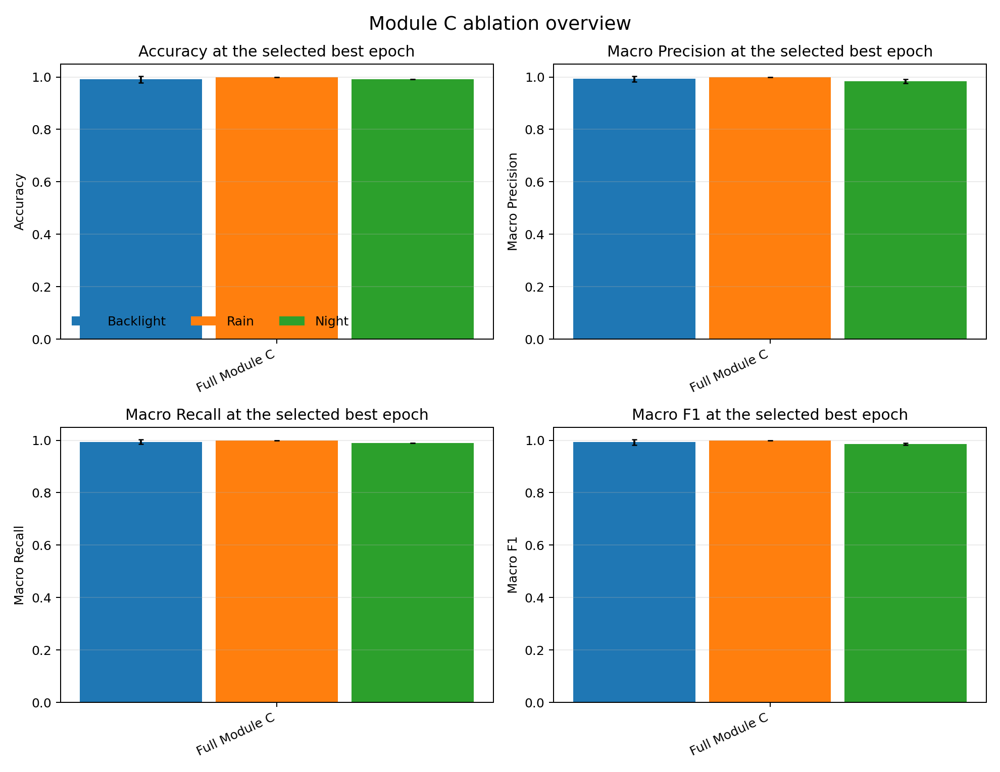
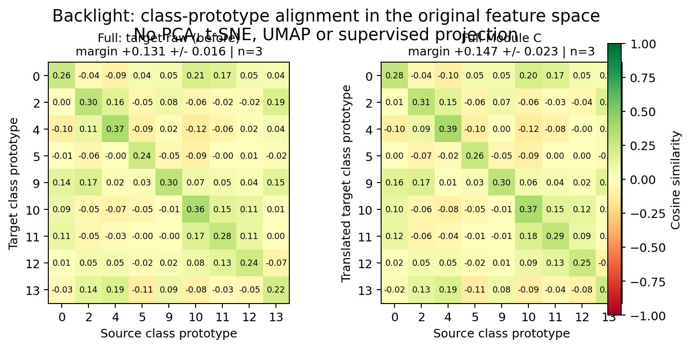
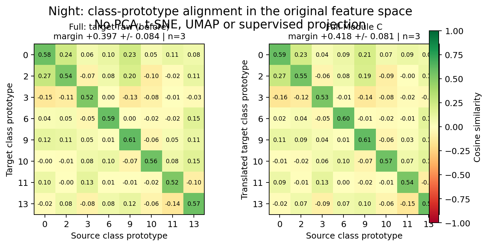
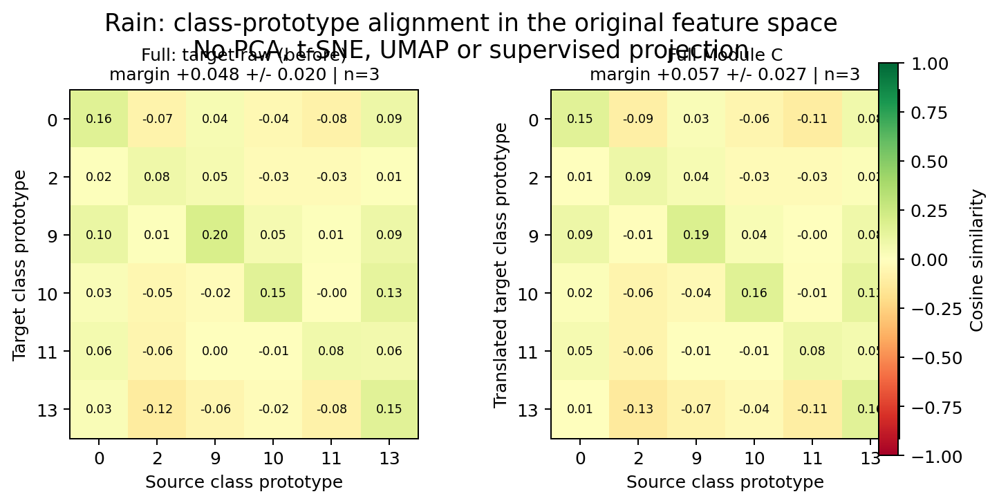

| variant | domain | runs | accuracy | macro precision | macro recall | macro F1 | F1 95% CI | mean errors / validation size | mean per-run accuracy Wilson 95% CI |
|---|---|---|---|---|---|---|---|---|---|
| Full Module C | Backlight | 3 | 0.990990990990991 | 0.9925925925925926 | 0.9938271604938271 | 0.9925177702955481 | 0.014665170220725781 | 0.33 / 37.00 | [0.8912, 0.9984] |
| Full Module C | Rain | 3 | 1.0 | 1.0 | 1.0 | 1.0 | 0.0 | 0.00 / 26.00 | [0.8713, 1.0000] |
| Full Module C | Night | 3 | 0.9916666666666667 | 0.9845679012345679 | 0.9886363636363636 | 0.985685697949849 | 0.005883361921097746 | 1.00 / 120.00 | [0.9543, 0.9985] |



